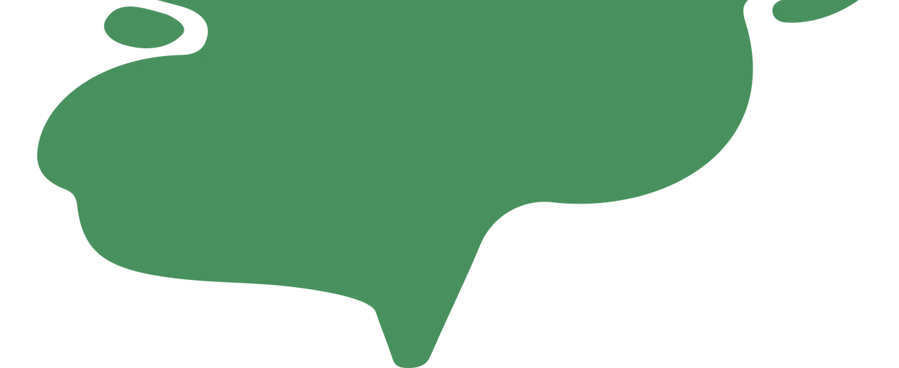
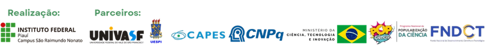
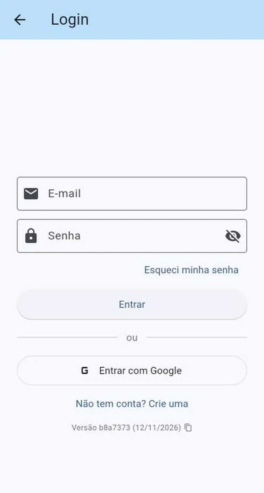
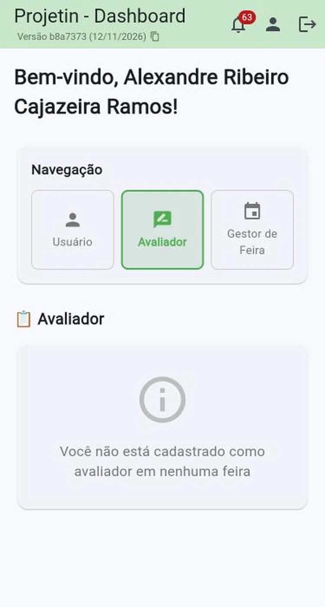
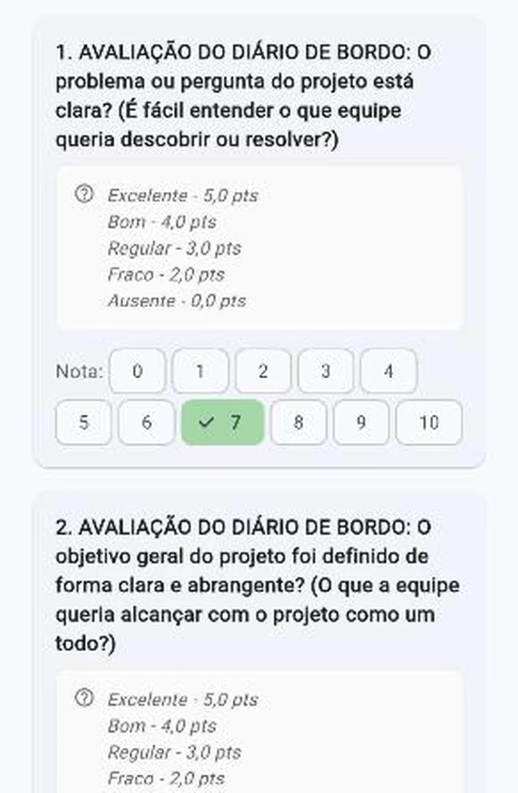
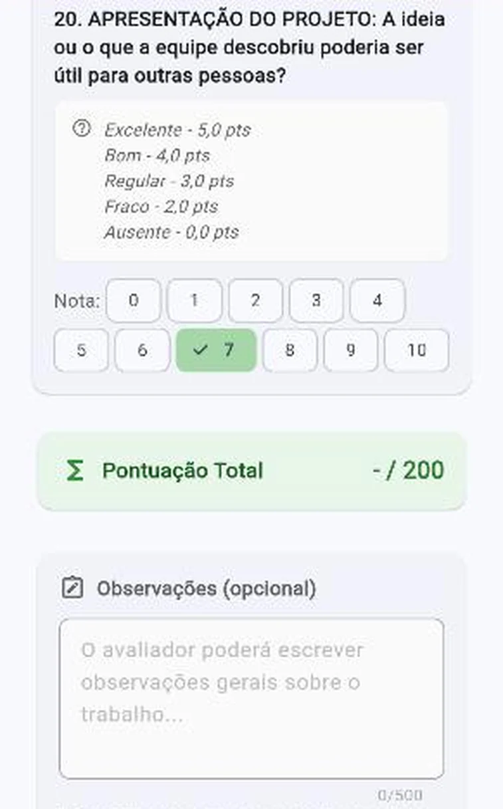

Feira Regional de
Ciências do Território
Serra da Capivara
Formação de avaliadores
18 e 19 de novembro
Avaliação pelo Projetin

Roteiro
Em 15 minutos, quatro passos
1
Acesso
Entrar no Projetin e chegar à sua lista de trabalhos.
2
A ficha
20 critérios, notas de 0 a 10 e a régua comum.
3
No estande
O ciclo de cada avaliação e como escrever a observação.
4
Imprevistos
Sem internet, nota errada, equipe ausente.
Seu papel
Entender o que a equipe investigou e registrar uma avaliação justa e construtiva
As notas
Definem a classificação e a premiação por área.
As observações
Ajudam estudantes da educação básica a crescer na pesquisa.
A mostra em números
O tamanho do trabalho
60
trabalhos aprovados
8
áreas do conhecimento
20
critérios por ficha
2
dias de mostra
Cada trabalho recebe 3 avaliações, e a nota final é a média delas. Os códigos seguem a área: AGRA, BIO, ENG, EXA, HUM, LLA, SAU e SOC.
Parte 1
1
Acesso ao Projetin
projetin.org, direto no navegador do celular
18/11 manhã e tarde · 19/11 só manhã
Ritual de chegada
1 · Acolhimento
Sala de apoio
Monitores recebem você numa sala reservada, com água, café e chá, e tiram dúvidas sobre a avaliação.
2 · Check-in
Frequência e login
Assine a frequência, retire o crachá, conecte-se ao Wi-Fi muv-avaliadores e entre no Projetin com a equipe de apoio.
3 · Hora de avaliar
Seu itinerário
No Projetin estão seus trabalhos, com os códigos dos estandes. Um monitor fica por perto para guiar o percurso.
Antes de 17/11: teste seu login. Durante a mostra: deixe a aba do Projetin aberta e o celular carregado.
Simulação
Do login à avaliação em 8 passos
1
Login
E-mail e senha, ou Google
2
Avaliador
A aba no painel inicial
3
MOSTRA MUV
O cartão da feira
4
Trabalhos
“Avaliação de Trabalhos”, se pedir
5
Escolha
O trabalho pelo código
6
Notas
0 a 10 nos 20 critérios
7
Observação
Confira o total e escreva
8
Enviar
E confirmar o envio
Tela real do Projetin
Reconstrução com os textos do sistema
indicam a origem de cada tela nos próximos slides

Passo 1 de 8 · Login
Entre em projetin.org
Use e-mail e senha ou Entrar com Google, sempre com a conta do e-mail informado à coordenação.
Esqueceu a senha? Toque em “Esqueci minha senha”. Melhor ainda: resolva antes, até 17/11.
Tela real do Projetin
Passo 2 de 8 · Painel
Toque na aba “Avaliador”
O painel abre na aba Usuário. A avaliação fica na aba do meio, Avaliador.
Tela real do Projetin
Usuário
Avaliador
Gestor
MOSTRA MUV - Feira Regional de Ciências da Serra da Capivara
Evento: 18/11/2026 - 19/11/2026
Passo 3 de 8 · A feira
Toque no cartão da MOSTRA MUV
A aba Avaliador lista as feiras em que você foi cadastrado como avaliador.
Reconstrução com os textos do sistema

Se aparecer isto no passo 3
“Você não está cadastrado como avaliador”
Quase sempre é login com outro e-mail. Saia, entre com o e-mail informado à coordenação e confira de novo.
Continuou?
Procure um monitor ou a mesa da COPI para conferir o cadastro.
Tela real do Projetin
Você possui mais de um papel de avaliação nesta feira. Selecione a área desejada abaixo.
Avaliação de Submissões
Avaliar trabalhos submetidos para seleção
Avaliação de Trabalhos
Avaliar trabalhos selecionados durante o evento
Passo 4 de 8 · Só se aparecer
Escolha “Avaliação de Trabalhos”
Esta tela aparece para quem também avaliou a seleção dos trabalhos. Para a mostra, é sempre Avaliação de Trabalhos.
Reconstrução com os textos do sistema
Restam 3 h e 20 min para avaliar (até 19/11/2026 às 12:00)
4
Total
3
Pendentes
1
Concluídas
Ler QR Code
EXA-07
Título do trabalho…
Pendente
BIO-03
Título do trabalho…
Concluída
Passo 5 de 8 · Seus trabalhos
Abra o trabalho pelo código do estande
A tela mostra quantos trabalhos você tem, quantos faltam e quanto tempo resta até o prazo.
Se preferir, use Ler QR Code para abrir o trabalho pelo código impresso.
Reconstrução com os textos do sistema

Passo 6 de 8 · Notas
Toque uma nota em cada critério
No celular, os botões de 0 a 10 ficam em duas linhas. Role a tela até o critério 20.
Use a régua combinada e ignore os “5,0 pts” da rubrica: um 5 nos botões é Regular.
Tela real do Projetin

Passo 7 de 8 · Total e observação
Confira o total e escreva a observação
A Pontuação Total soma sozinha, até 200. Em Observações, escreva um ponto forte e uma sugestão, em até 500 caracteres.
Tela real do Projetin
Avaliação enviada em 18/11/2026 às 09:42. Você pode editar até o prazo.
Pontuação Total
162 / 200
Enviar
Avaliação enviada com sucesso!
Passo 8 de 8 · Enviar
Toque em Enviar e confira a mensagem
Se faltar alguma nota, o sistema avisa: “Preencha todas as notas”. Com tudo certo, aparece “Avaliação enviada com sucesso!”.
Errou? Abra o trabalho de novo e corrija: dá para editar até o prazo.
Reconstrução com os textos do sistema
Parte 2
2
A ficha
8 critérios, 20 perguntas, uma régua comum
Do manual para o Projetin
Os 8 critérios do manual viram 20 perguntas na ficha
Diário de bordo · 60%
Ideia e objetivo
perguntas 1–3
Metodologia
perguntas 4–6
Resultados
perguntas 7–9
Conclusão
perguntas 10–12
Apresentação · 40%
Clareza
13–14
Domínio
15–16
Criatividade
17–18
Relevância
19–20
Cada pergunta vale de 0 a 10. No Projetin a soma vai até 200; no manual, até 100. O peso é o mesmo, e a nota final é a média dos 3 avaliadores.
A régua de notas
Os 5 níveis do manual, em notas de 0 a 10
9–10
Excelente
7–8
Bom
5–6
Regular
2–4
Fraco
0–1
Ausente
As cores são as do manual. No Projetin, cada pergunta tem botões de 0 a 10: use esta correspondência para que todos avaliem com a mesma régua.
Atenção
Um 5 nos botões é Regular, não Excelente
Na ficha, a rubrica mostra “Excelente 5,0 · Bom 4,0 · Regular 3,0…”. Ignore esses números e use a régua de 0 a 10 do slide anterior.
Diário de bordo · Ideia e objetivo (1–3) · Metodologia (4–6)
O que observar e o que perguntar
| # | Critério | Pergunte à equipe |
|---|---|---|
| 1 | Problema ou pergunta clara | “Qual pergunta vocês queriam responder?” |
| 2 | Objetivo geral claro | “O que vocês queriam alcançar no final?” |
| 3 | Objetivos específicos | “Quais etapas vocês definiram para chegar lá?” |
| 4 | Método correto e organizado | “Como vocês fizeram, passo a passo?” |
| 5 | Variáveis identificadas | “O que mudaram de propósito e o que mantiveram igual?” |
| 6 | Materiais e métodos adequados | “Por que escolheram esses materiais?” |
No diário: a pergunta nas primeiras páginas, as metas e os registros datados de cada etapa.
Diário de bordo · Resultados (7–9) · Conclusão (10–12)
Resultados, conclusão e fontes
| # | Critério | Pergunte à equipe |
|---|---|---|
| 7 | Observações explicadas | “O que vocês observaram nos testes?” |
| 8 | Responde à pergunta inicial | “E qual é a resposta para a pergunta do começo?” |
| 9 | Tabelas, gráficos ou desenhos | “Podem me mostrar os dados?” |
| 10 | Conclusão coerente | “O que vocês concluíram, e por quê?” |
| 11 | Explica o que aprendeu | “O que aprenderam que não sabiam antes?” |
| 12 | Pesquisa em fontes | “Onde vocês pesquisaram sobre o tema?” |
No diário: anotações de resultados, a página de conclusão e as referências consultadas.
Apresentação · Clareza · Domínio · Criatividade · Relevância
A conversa no estande
| # | Critério | Pergunte ou observe |
|---|---|---|
| 13 | Explicação fácil de entender | Ficou claro o que fizeram e descobriram? |
| 14 | Materiais de apoio ajudam | “Me mostrem como isso funciona.” |
| 15 | Domínio do assunto | Faça uma pergunta fora do roteiro |
| 16 | Cada um sabe seu papel | “O que cada um de vocês fez?” |
| 17 | Criatividade | “O que o projeto tem de diferente?” |
| 18 | Materiais sustentáveis | “Reaproveitaram ou reciclaram algo?” |
| 19 | Ligação com a comunidade | “Por que esse tema importa aqui?” |
| 20 | Útil para outras pessoas | “Quem poderia usar o que descobriram?” |
Parte 3
3
No estande
O ciclo de cada avaliação, a observação e a postura
Cerca de 15 minutos por trabalho
O ciclo em cada estande
1
Chegue
Apresente-se e confira o código
1 min
2
Ouça
A equipe apresenta sem interrupção
5 min
3
Pergunte
A integrantes diferentes
4 min
4
Diário
Folheie o diário de bordo
2 min
5
Notas
Marque os 20 critérios
2 min
6
Escreva
Ponto forte e sugestão
1 min
7
Envie
Confira se ficou “concluído”
<1 min
Os tempos são referência. Agradeça a equipe ao sair, sem comentar a nota.
A observação
Escreva como se a equipe fosse ler
Ponto forte
+
Sugestão concreta
Assim
“A equipe explicou com segurança como montou o filtro e registrou bem os testes. Para avançar, comparem a água antes e depois em uma tabela com as mesmas medidas.”
Evite
“Fraco.” · “Faltou metodologia.”
Comentários sobre a escola, o estande ou a idade dos estudantes.
Postura
Boas práticas
Faça
- Acolha: para muitos é a primeira apresentação
- Pergunte com curiosidade, não para testar
- Avalie o trabalho, não a escola ou o estande
Não faça
- Comentar notas com a equipe
- Comparar trabalhos em voz alta
- Avaliar trabalho que você orienta ou com o qual tem vínculo
Parte 4
4
Imprevistos
O que fazer quando algo sai do roteiro
Se algo der errado
Procure um monitor
| Situação | O que fazer |
|---|---|
| “Não está cadastrado como avaliador” | Entre com o e-mail certo; se continuar, chame um monitor |
| Equipe incompleta | Avalie com os presentes e informe a comissão |
| Trabalho da lista ausente | Avise um monitor para registrar a ausência |
| Fiquei sem internet | Reconecte ao Wi-Fi; se não voltar, peça a ficha impressa |
| Enviei uma nota errada | Abra o trabalho e corrija: dá para editar até o prazo |
| Equipe sem diário de bordo | Avalie pelo que mostrarem e registre nas observações |
| Terminei antes do prazo | Avise: pode haver trabalhos precisando de avaliador |
Último caso
Sem internet? Os monitores têm fichas impressas
1
Tente o Wi-Fi
Reconecte à rede dos avaliadores antes de qualquer coisa.
2
Peça a ficha
Um monitor entrega a ficha impressa com os mesmos 20 critérios.
3
Preencha completa
Código do trabalho, seu nome e as 20 notas de 0 a 10, com a mesma régua.
4
Devolva na hora
Entregue ao monitor. A coordenação lança no sistema.
Obrigado por apoiar a ciência na Serra da Capivara!
Dúvidas? Escreva para a Feira
feira.ciencias@ifpi.edu.br
Instagram @muv.srn
Material elaborado por Alexandre Ribeiro Cajazeira Ramos · COPI, IFPI Campus São Raimundo Nonato · alexandre.cajazeira@ifpi.edu.br